UN Datathon 2023
In this report, we explore the potential of combining different datasources and advanced computational techniques to better understand some of the dynamics behind food insecurity in the Horn of Africa. We also propose a way forward for leveraging such data in the future to support anticipatory action for increased food security.
The Horn of Africa is a large peninsula and geopolitical region in East Africa. It is the fourth largest peninsula in the world, located on the easternmost part of the African mainland. It is composed of Ethiopia, Eritrea, Somalia and Djibouti; broader definitions also include parts or all of Kenya, Sudan, South Sudan, and Uganda. The term Greater Horn Region (GHR) can additionally include Burundi, Rwanda, and Tanzania. It lies along the southern boundary of the Red Sea and extends hundreds of kilometres into the Guardafui Channel, Gulf of Aden, and Indian Ocean and shares a maritime borders with the Arabian Peninsula region of Western Asia.*
The region is in a situation of multidimentional protracted crisis*.
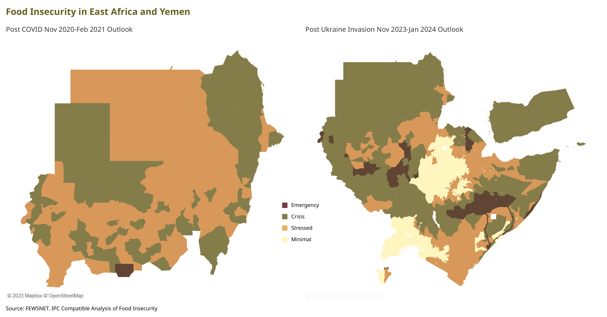
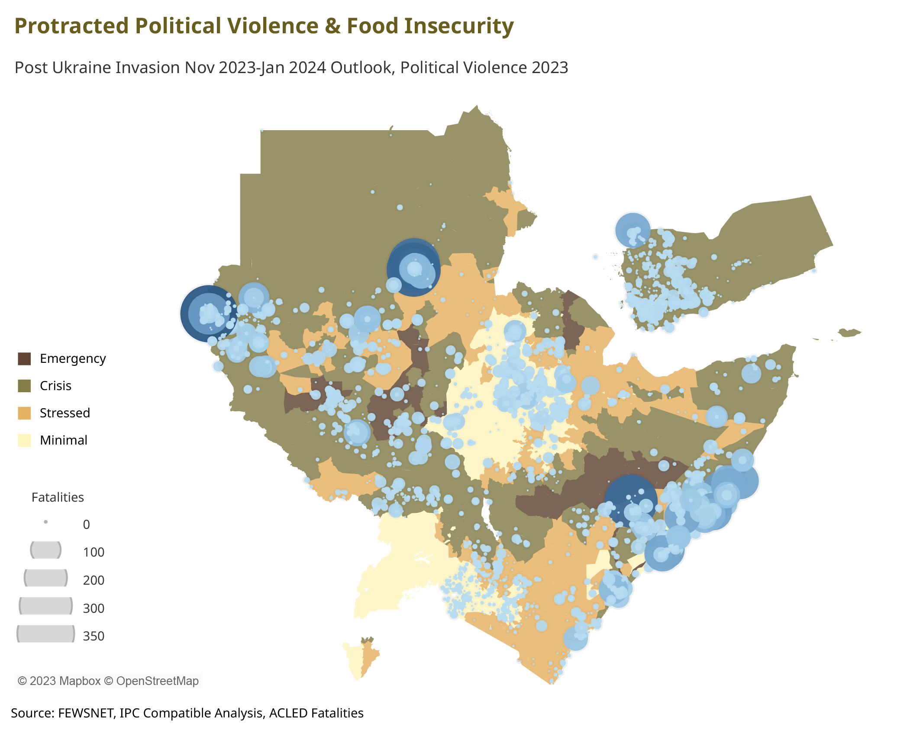
More than 26 million people in the region are in a situation of food-security-crisis or worse*
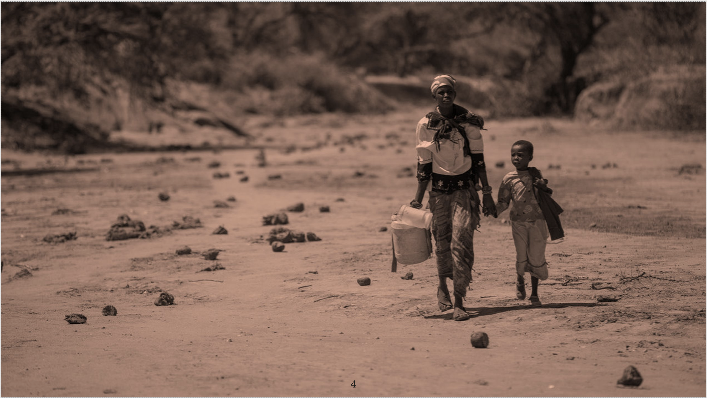
To gain a comprehensive understanding of these multifaceted crises, the application of big data analysis is paramount. By harnessing large volumes of data from various sources, such as climate models, conflict databases, economic indicators, and social media, researchers and policymakers can discern patterns, identify hotspots, and anticipate trends in the crisis dynamics.
AIS data
Notably, non-traditional datasets like Automatic Identification System (AIS) information, which tracks global maritime traffic, can provide invaluable insights into secondary risk drivers. For instance, analyzing AIS data can shed light on the impact of the Ukraine war on Sudan's food security and Egypt's grain imports. By monitoring shipping routes and volumes, researchers can discern shifts in supply chains, potentially revealing disruptions in grain shipments to Egypt and, subsequently, their effects on food availability in Sudan. This unconventional data source enhances our ability to grasp the intricate web of global events influencing regional crises.
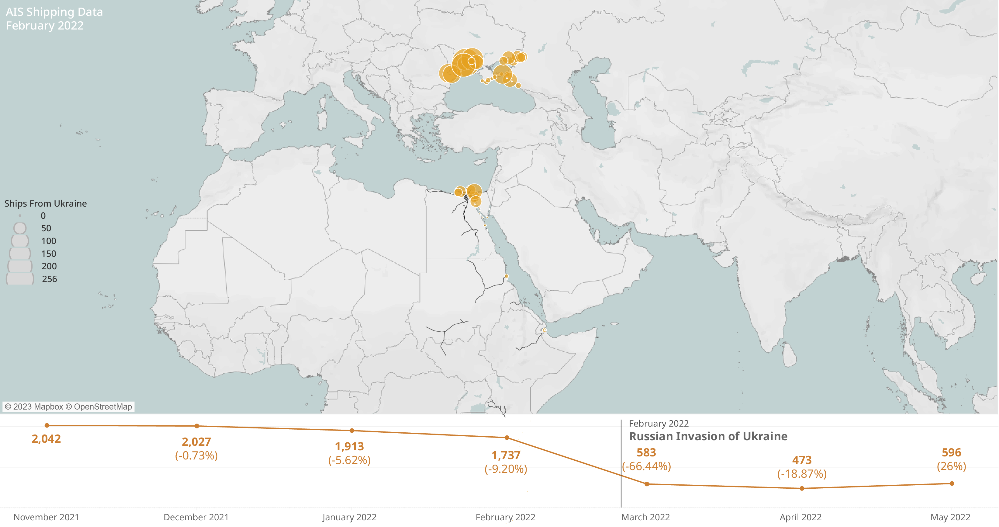
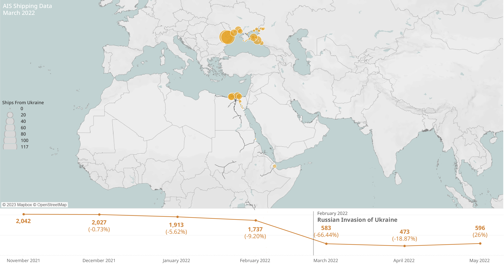
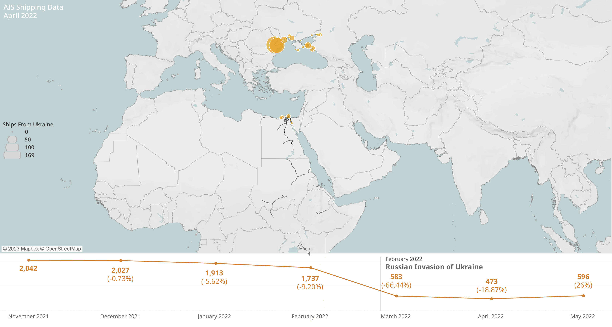
Analyst's thoughts
TO DO: Comments from Joschi
Analyst's thoughts
TO DO: Comments from Evan
GDELT
Another source of big data, in the form of Global Database of Events, Language, and Tone (GDELT), holds immense potential for anticipatory decision-making in this crisis. GDELT aggregates and analyzes news reports from around the world, providing a real-time pulse of global events. By applying advanced analytics to this data, it becomes possible to predict food price trends based on geopolitical events, weather patterns, and market behaviors. This foresight enables timely interventions and targeted resource allocation to mitigate the impact of the crisis on vulnerable populations.
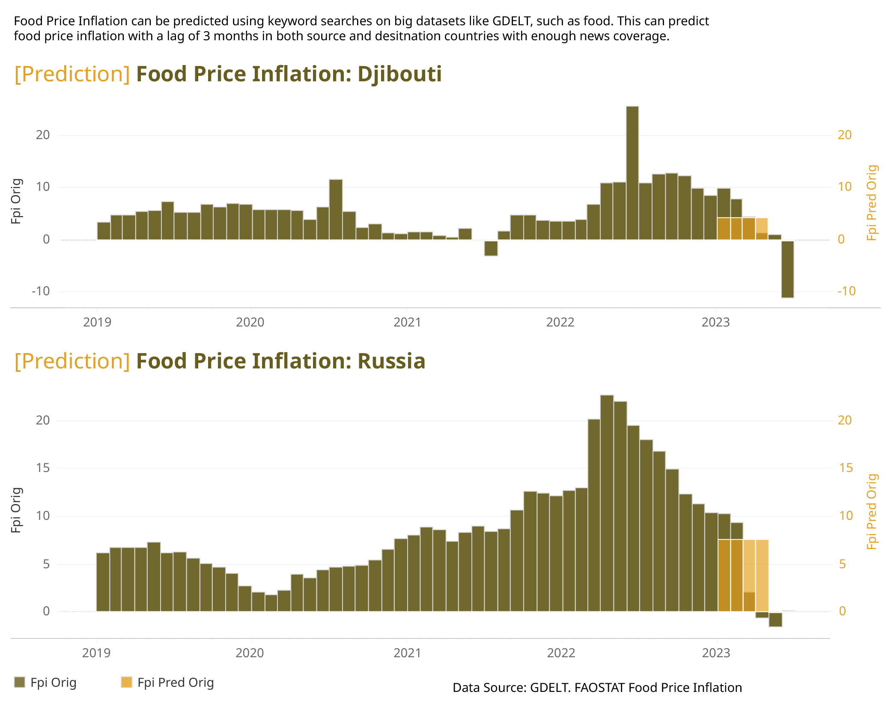
The multifaceted crisis in the Horn of Africa has far-reaching implications for Sustainable Development Goals (SDGs). Seven SDGs are particularly affected:
-
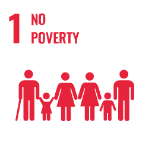
SDG 1: No Poverty due to increased impoverishment and economic instability.
-
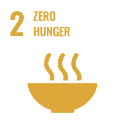
SDG 2: Zero Hunger,
given the acute food insecurity. -
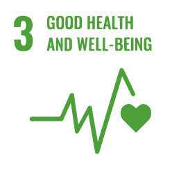
SDG 3: Good Health and Well-being,
as malnutrition rates rise. -
SDG 4: Quality Education,
with disruptions to schooling due to the crisis. -
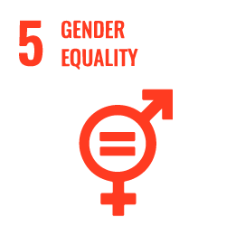
SDG 5: Gender Equality,
as women and girls face heightened vulnerabilities. -
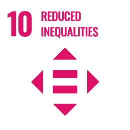
SDG 10: Reduced Inequalities,
as marginalized populations bear the brunt of the crisis. -
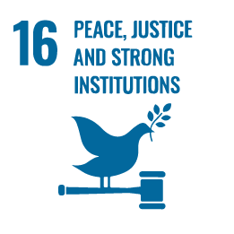
SDG 16: Peace, Justice, and Strong Institutions,
as political violence undermines governance structures.
In conclusion, we believe the crisis in the Horn of Africa demands a multidimensional approach, leveraging big data analysis for a nuanced understanding of the underlying risk drivers. This knowledge not only informs policy responses but also empowers anticipatory decision-making to alleviate the suffering of affected communities and safeguard progress towards Sustainable Development Goals.